Save Gillman Forest
Gillman Forest has stood for generations. Within months, a decision could be made to clear it. And once a mature forest is lost, no amount of replanting brings it back. Add your voice today, and help us keep Gillman standing for generations to come.
What clearing Gillman would destroy
Gillman is not empty land. It is a mature forest decades in the making that cannot be recreated, a living link between Berlayer Creek, Labrador and the Southern Ridges, and one of Singapore’s most effective natural cooling landscapes. It is a sanctuary where people walk, breathe and restore their health, and one of the rare places where heritage, art and nature meet. Clear it, and none of it comes back.
Decades of natural regeneration that cannot simply be recreated.
A vital link between Berlayer Creek, Labrador Nature Reserve and the Southern Ridges.
One of Singapore’s most effective natural urban cooling landscapes.
Daily access to walking, forest bathing, birdlife and restorative green space.
Proven benefits for physical health, mental wellbeing and quality of life.
A rare place where heritage, arts and nature exist together.
Once cleared, these ecological and community values cannot be fully restored.
Who else lives here
Gillman is somebody’s habitat. These are its residents and the layers of forest they depend on, all photographed here by people who walk this ground.
Nests inside natural cavities in old, large trees. Those hollows take decades to form, so a replanted forest cannot offer them.
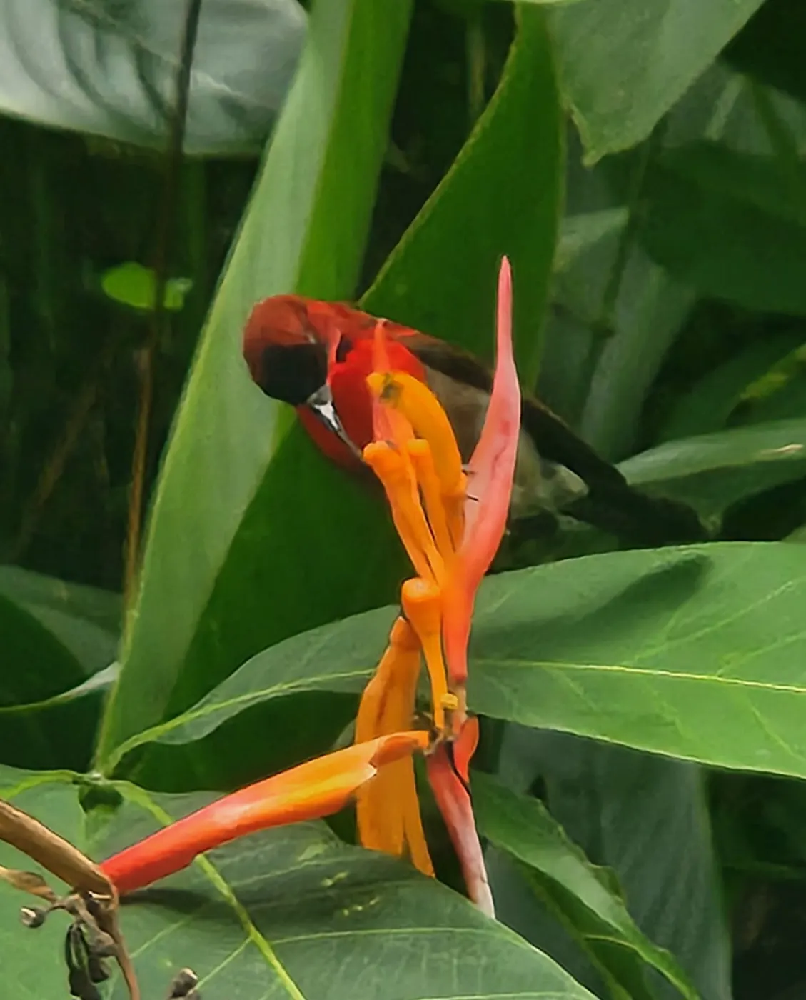
Singapore’s national bird, here feeding at a heliconia. It pollinates as it moves between flowering plants along the forest edge.
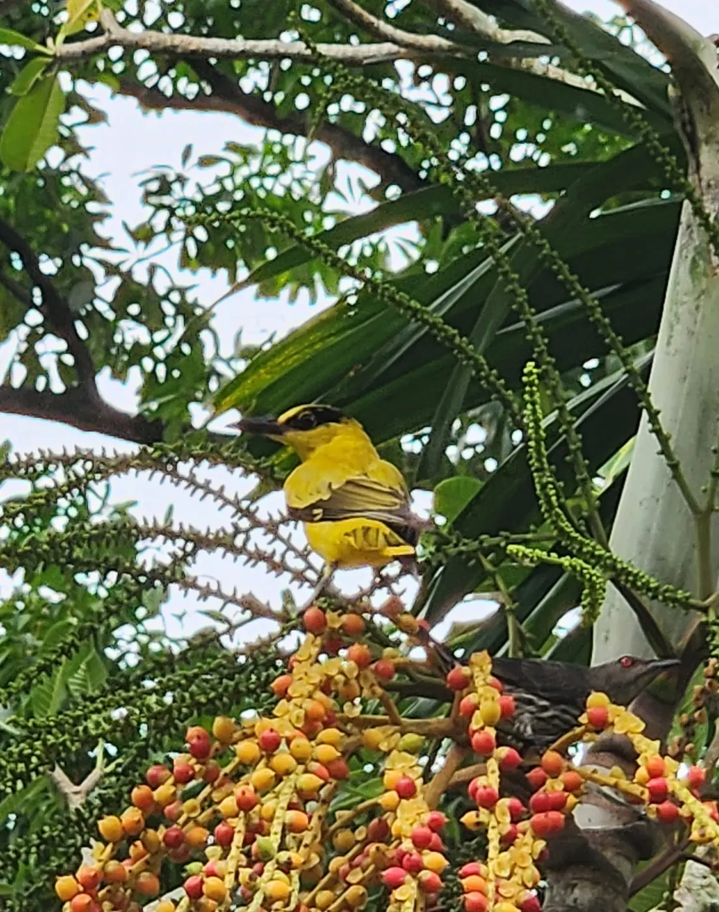
Follows the fruiting season through the canopy, carrying seeds well beyond the tree it fed in. An Asian glossy starling feeds on the same palm below it.
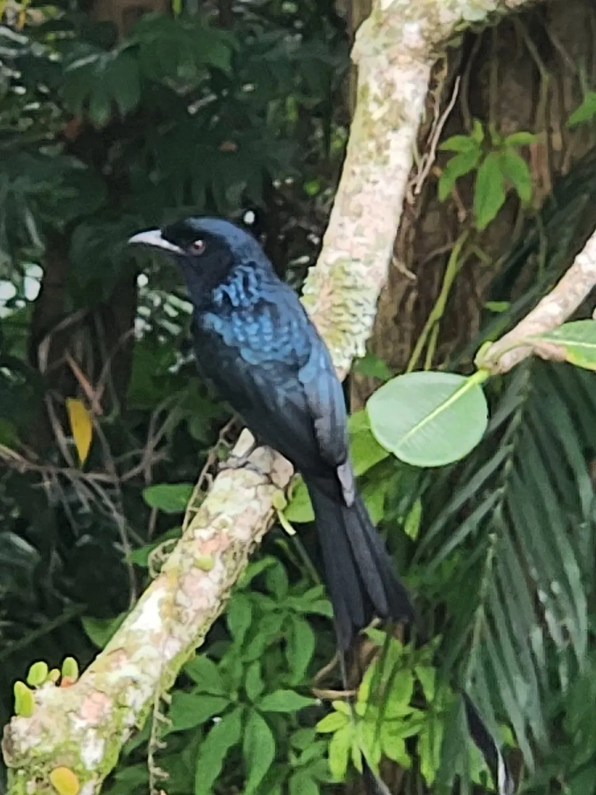
A forest specialist and a skilled mimic. It hunts insects flushed by other birds, so it needs a forest with a full community living in it.
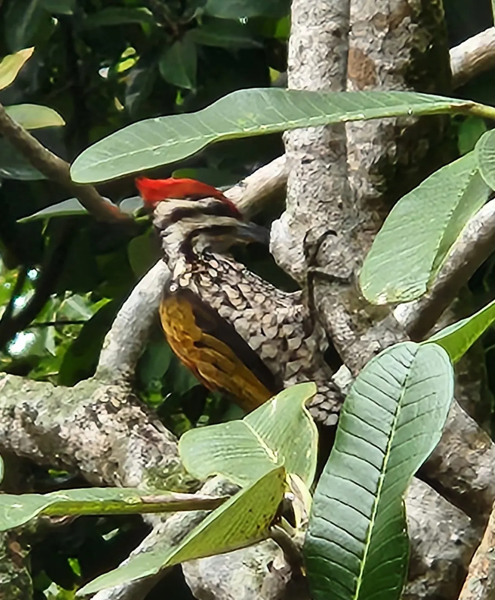
Chisels nest holes into old and dying trees. Other species move into those holes afterwards, so a forest cleared of ageing timber loses them too.
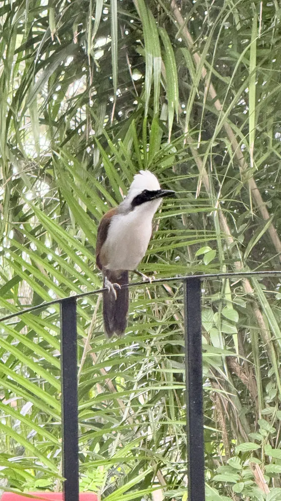
Moves in loud family parties through the dense low growth, which is the first layer to go when land is cleared.
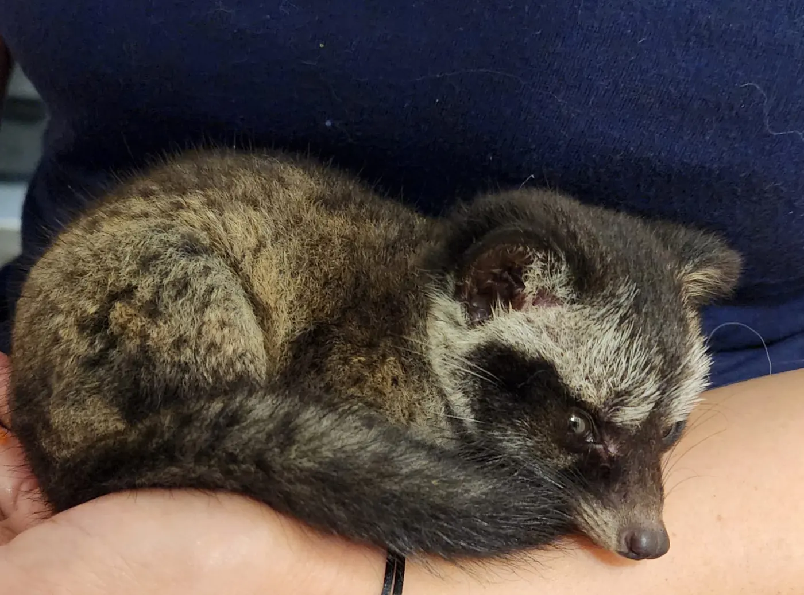
Native, nocturnal and seldom seen. It spreads the seeds of the fruit it eats, quietly replanting the forest as it goes.
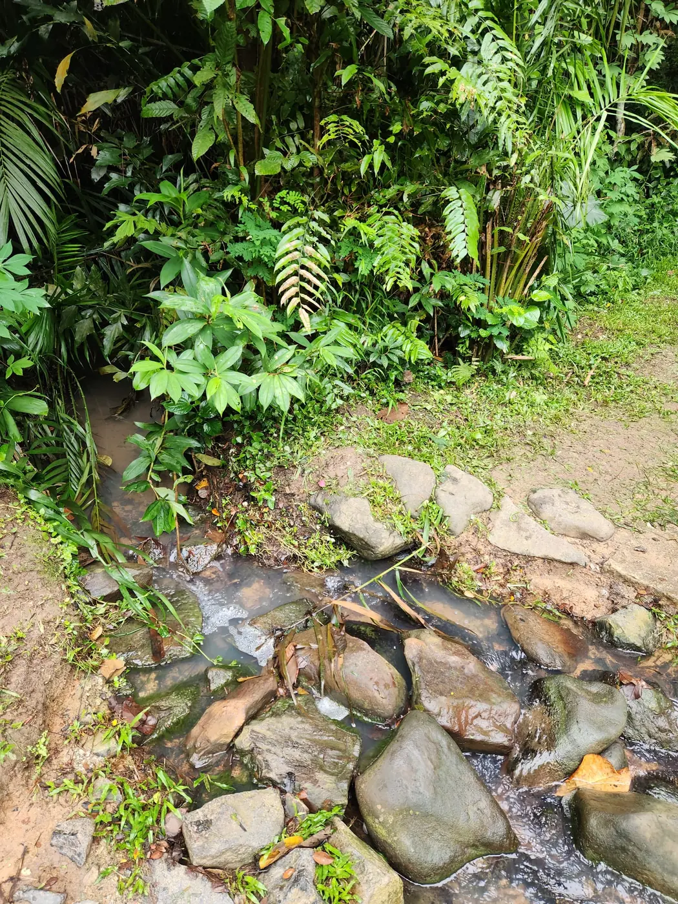
A stream threads through the forest floor. It supports its own community of life and feeds into the wider Berlayer Creek system.
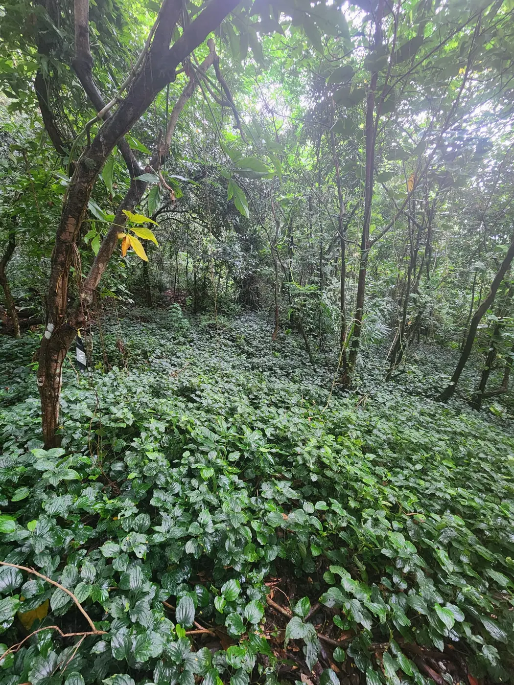
Ferns, saplings and climbers below the canopy. This is where most of the forest’s smaller residents feed, shelter and nest.
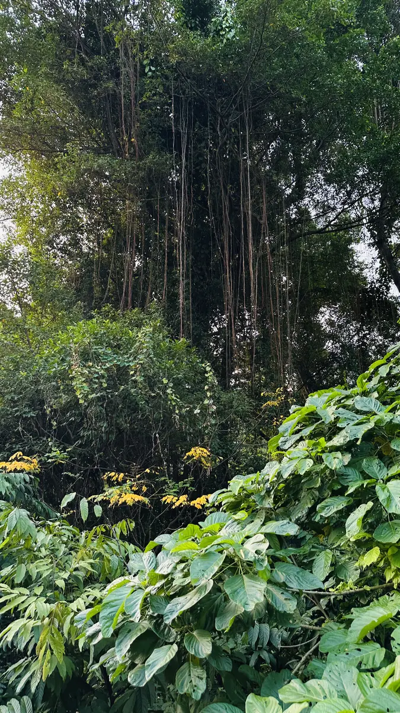
Mature trees closing overhead. The layered structure is what cools the air, holds the soil and houses everything above.
Gillman sits between Berlayer Creek, Labrador Nature Reserve and the Southern Ridges. Species like these move between those green spaces. Remove the link in the middle and the habitat on either side is left fragmented.
Two ways to be counted
Make your voice count
Events
Walk with us this Saturday
With the Telok Blangah Hill Park Forest Walk now open again, everyone is invited to join a community walk through one of Singapore’s most unusual green corridors. The route runs from Telok Blangah Hill Park along the Forest Walk and into Gillman Barracks, following the connections between nature, heritage and community that so many residents spoke about at the 30 July dialogue.
- Date
- Saturday, 8 August 2026
- Time
- 8.00am
- Meeting point
- Telok Blangah Hill Park, at the Forest Walk entrance
- Ends at
- Kyuukei Coffee, Gillman Barracks
- Duration
- About 1.5 to 2 hours
The walk goes at a leisurely pace, with pauses along the way to take in the ecology, the heritage buildings and the community spaces. Bring your family, bring a friend, bring a camera. Every person who walks it is one more person who has stood in this forest.
Google Maps directions to starting point
Scan this with your phone and Google Maps will route you from wherever you are to the exact spot we are meeting.
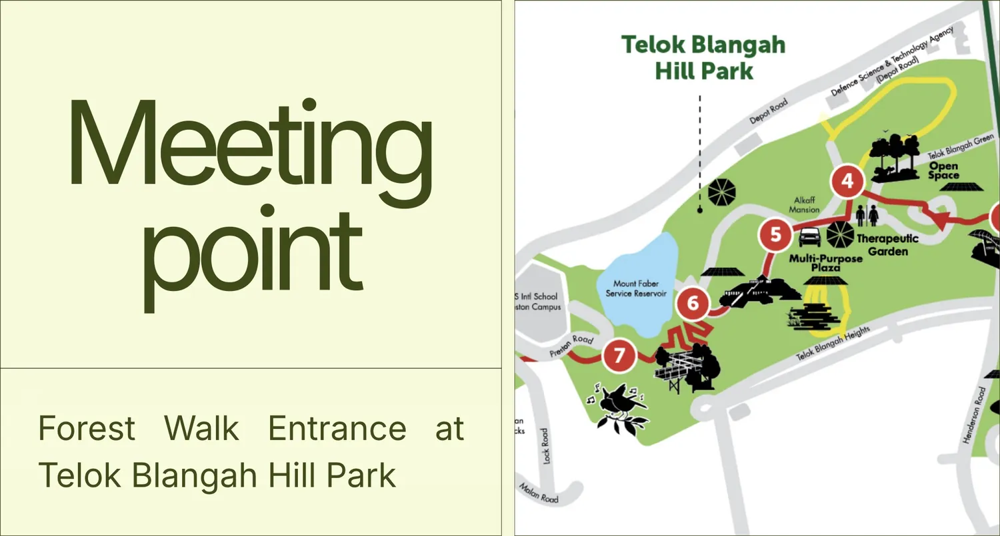
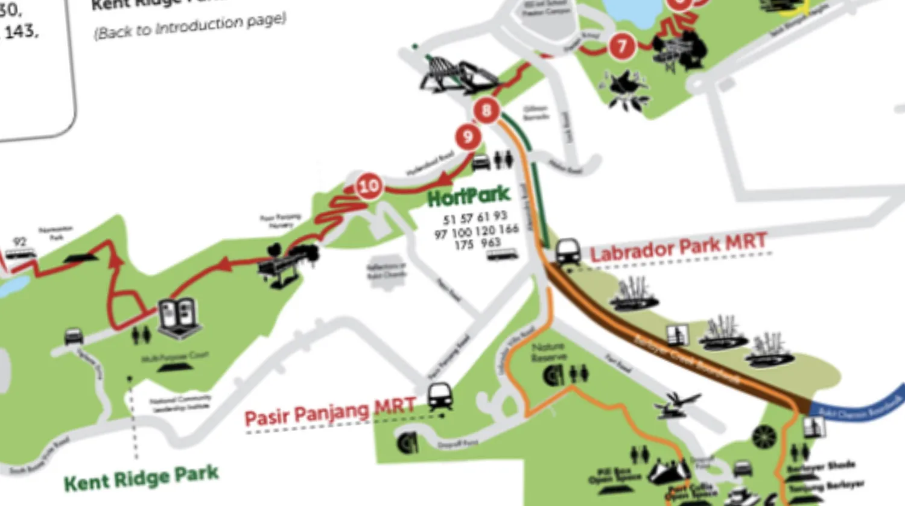
Tap any image to enlarge.
Letters & reports
Every letter counts. Letters get read, logged and answered, and each one puts Gillman on another desk. Fifteen minutes, in your own words, is enough. If you are not sure where to start, write to the two people at the top of this list.
- Alvin Tan, Minister of State for National Development, who answered for the Government in Parliament on 4 August and is leading the response on both sites.
- Prime Minister Lawrence Wong, via the PMO website, since the final balance between housing and forest is a whole of government decision.
- Grace Fu, Minister for Sustainability and the Environment, whose ministry residents have repeatedly asked to take a leading role.
- Your own MP, whoever that is. MPs raise what their residents write to them about, and 4 August showed they do.
Contacts for the MPs covering the area and the key decision makers:
| Name | Constituency | Government position | Email address |
|---|---|---|---|
| Chan Chun Sing | Buona Vista | Coordinating Minister for Public Services and Minister for Defence | chan_chun_sing@mindef.gov.sg |
| Alvin Tan Sheng Hui | Moulmein-Cairnhill | Minister of State for Trade and Industry, and National Development | alvin.tan@pap.org.sg |
| Joan Pereira | Henderson-Dawson | Member of Parliament | joan.pereira@pap.org.sg |
| Foo Cexiang | Tanjong Pagar-Tiong Bahru | Minister of State | Foo.Cexiang@pap.org.sg |
| Rachel Ong | Telok Blangah | Member of Parliament | rachel.ong@pap.org.sg |
| Grace Fu | Minister for Sustainability and the Environment | grace_fu@mse.gov.sg |
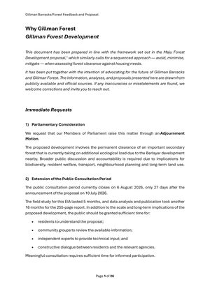
The dialogue
The dialogue with our Ministers, MPs and the representatives of HDB, URA, NParks and MSE is ongoing. Here is where it stands.
Where things stand after Parliament
On 4 August the Government confirmed in Parliament that it will build at Gillman Barracks. It also said the plans are not final. How much forest is cleared, how wide the wildlife corridor to Labrador will be, how many homes and in what mix, and which heritage buildings are retained are all still being decided. HDB has committed to publishing a report answering the public feedback and setting out any changes to the plans.
That makes the feedback form the strongest lever residents have, and it closes Thursday 6 August at 6pm. Submit your feedback
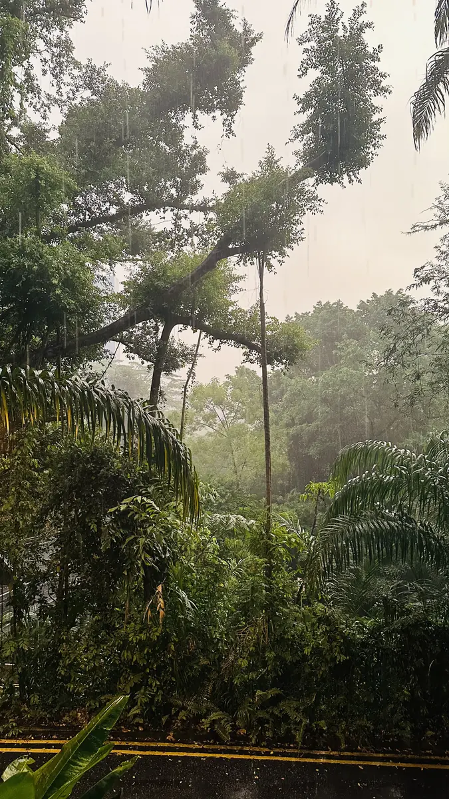
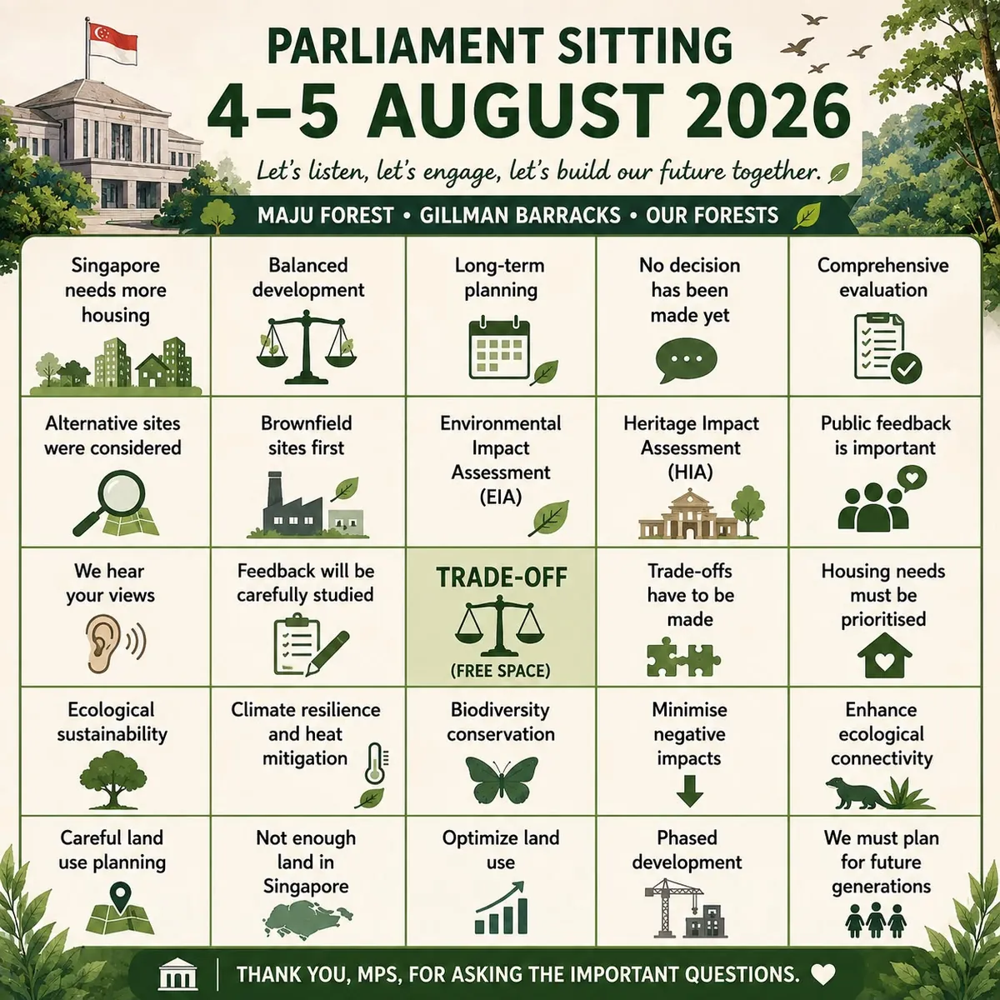
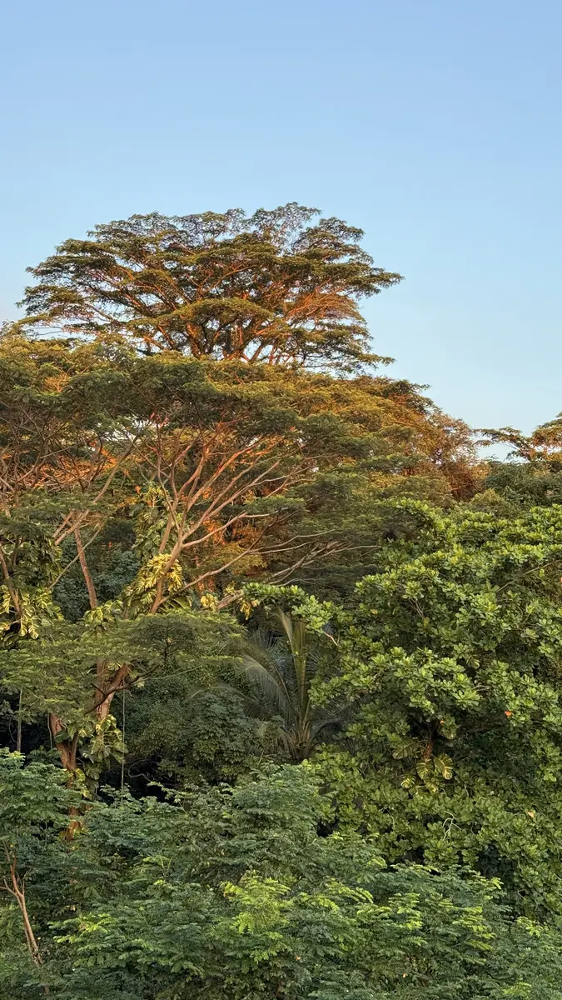
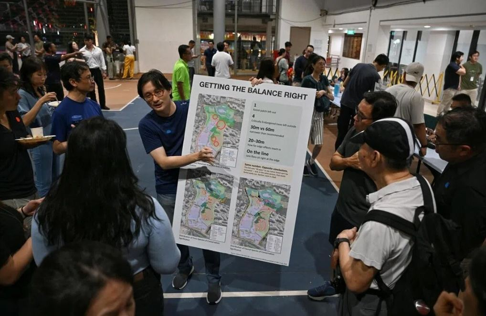
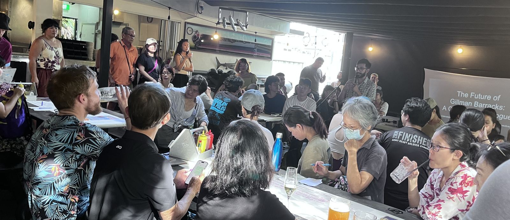
4 August 2026 — Parliament
More than 20 questions on Gillman Barracks and Maju Forest were filed for this sitting by members from both sides of the House. Answering for the Ministry of National Development, Minister of State Alvin Tan said the plans for both sites are not final, that engagement with stakeholders will continue after the consultation closes on 6 August, and that agencies will publish a report summarising their responses to the feedback and any changes made to the plans.
On Gillman specifically, he said the Government is studying how to retain most of the native dominated secondary forest, how to maintain ecological connections east to west between Telok Blangah Hill Park and HortPark and north to south towards Berlayer Creek and Labrador Nature Reserve, and how to retain all buildings of exceptional heritage significance and most of those rated high. He said the number of homes has not been fixed, that the current conceptual plan already carries fewer homes in order to keep green and heritage areas, and that conserving more would mean building fewer still.
The questions residents had asked were these:
- Which parts of the plan remain open to change, and whether site clearance or tenders will wait for the feedback to be considered.
- Whether alternative sites were evaluated, and whether a smaller footprint or lower density at Gillman itself was assessed against the current plan.
- Whether dialogue sessions with residents, heritage groups and nature groups will follow once feedback closes on 6 August.
- What threshold of harm would set a site aside, given that both assessments rate the biodiversity impact as major negative even after mitigation.
- Whether under-used state land, including the grounds of black and white bungalows and ageing low-rise estates, was assessed first.
- What urban heat modelling was done, and what the effect on surrounding homes is expected to be.
- Whether the phased clearance plan includes checkpoints where monitoring data is reviewed before further clearance is authorised.
3 August 2026 — Gillman and Maju on Teh Tarik with Walid
Episode 158 of the programme was given over to a discussion of Maju Forest and Gillman Barracks, with Melissa Low, Head of the NUS Sustainability Academy, and Muhd Nasry, Executive Director of Singapore Youth Voices for Biodiversity. Melissa Low helped organise the residents’ dialogues at Telok Blangah.
Watch the discussion Instagram1 August 2026 — dialogue with MP David Hoe, MP Lee Hui Ying and the Nature Society
A session at EtonHouse, Orchard Road, hosted by the Young PAP Advisers and moderated by a member of the Nature Society, held under Chatham House rules. It opened with an explanation of how an Environmental Impact Assessment is commissioned and what it covers, then moved to open questions and four smaller discussion groups.
Recurring themes from the floor:
- The four-week feedback window is too short for a report of this size, and is the same regardless of how large the development is.
- An EIA is commissioned only after the decision to redevelop has been made, so it can mitigate but not reconsider. The Nature Society noted there is no precedent for such a decision being reversed, and that the time to be heard is during Master Plan brainstorming — while adding that feedback through the HDB channel is still worth giving.
- The assessment covers flora and fauna but not urban heat, cultural value, opportunity cost, or the interests of future generations.
- Doubts about whether mitigation measures are enforced, citing Berlayer Creek at the former Keppel site, where trees and mangroves were lost despite similar assurances.
- Questions about the transparency of the housing demand figures behind the plans.
- Calls for the Ministry of Sustainability and the Environment to take a leading role.
- On Gillman specifically: most of the native-dominated forest would be kept, but a large area of exotic forest would be lost, and the corridor to Labrador Park at 30 m is narrower than it should be. Gillman is the connector between the Southern Ridges and Labrador Park; without it, the forests fragment.
MP David Hoe asked each group for the one question they would most want put to Parliament, and said that public feedback can make a difference — “nothing is cast in stone”.
30 July 2026 — dialogue with MP Rachel Ong and representatives of HDB, URA and NParks
26 July 2026 · Gillman Barracks and Forest Community Forum
Residents came together for a community-led dialogue, “The Future of Gillman Barracks”, to understand the plans and share their views ahead of the sessions with the planning agencies.
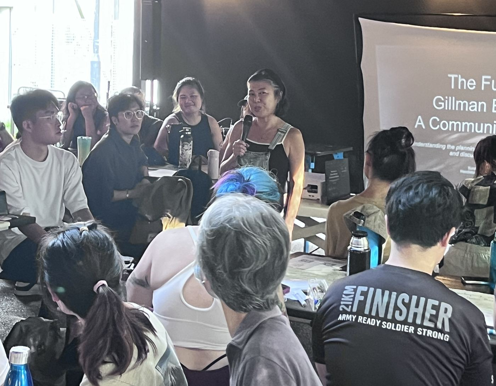
In the news
What the press has written about Gillman Barracks since HDB released its studies on 10 July 2026, including the coverage that deals with Maju Forest alongside it.
Reporting
-
11 arts tenants at Gillman Barracks to remain as existing leases continue until 2029: Edwin Tong
A written answer puts on record that the eleven arts tenants can stay to the end of their leases, with the option to extend to the end of 2029, a commitment the precinct’s supporters can now point to.
-
WP MPs ask if Gillman, Maju Forest are right housing sites; Alvin Tan defends housing needs & environmental trade-offs
The fullest account of the debate itself, in which MPs pressed on alternative sites, environmental thresholds and earlier consultation, and the minister agreed to extend the engagement period beyond 6 August.
-
Alvin Tan confirms Maju and Gillman forest redevelopment will proceed after Andre Low presses on options
The record of the exchange in which the Government said it will proceed, after an NCMP asked directly whether not developing the sites was still an option.
-
Government to engage stakeholders further before finalising Maju Forest, Gillman plans, says Alvin Tan
Sets out the commitments made in the House: further engagement after the deadline, a published response to feedback, and study of retaining most of the native forest and the most significant heritage buildings.
-
Govt will proceed to redevelop Maju Forest & Gillman Barracks, but plans not finalised: Alvin Tan
Answering at least 13 MPs, the Minister of State for National Development said both sites are already zoned for housing and that the government will proceed, while the detailed plans are still open and feedback will be reviewed after 6 August.
-
Parliament to discuss Gillman Barracks and Maju Forest housing plans, and GovTech layoffs
A preview of the 4 August sitting and the questions filed on the two sites.
-
Parliament to debate Gillman Barracks and Maju Forest housing plans
More than 20 questions on the two sites make them the most heavily questioned item on the order paper for the sitting on 4 August.
-
PSP and PAP cross paths at hawker centre in Marymount during Gillman and Maju Forests outreach
PSP members gathering petition signatures in Marymount met the constituency’s PAP MP, a sign the campaign is being taken to neighbourhoods well beyond the two sites.
-
‘Nothing is cast in stone’: MPs pledge to raise concerns over Maju Forest, Gillman Barracks
Two MPs told a public talk of around 80 people that the plans are not settled and that they would take residents’ concerns into the parliamentary sitting.
-
Forest preservation and an early say among issues raised at Gillman Barracks dialogue
Reporting from the 30 July dialogue at Telok Blangah Community Club.
-
Residents grill agencies on ecology and trust at Gillman Barracks dialogue
Around 300 attended and 60 questions were put to HDB, URA and NParks. Ecology, trust in the consultation and housing need made up roughly three quarters of them.
-
MPs file questions on Gillman and Maju Forest plans as public feedback deadline looms
Members from both sides of the House file questions on housing demand, consultation and alternatives.
-
Online petitions against Gillman Barracks and Maju Forest housing plans pass 40,600 endorsements
Nine thousand more signatures in a week.
-
Community groups organise Gillman Barracks events amid growing calls to protect its green heritage
Walks, talks and gatherings organised by residents and heritage groups.
-
Online petitions opposing Gillman and Maju Forest housing plans surpass 31,500 endorsements
Ten days after the announcement.
-
NUS academic questions how green space decisions are made, urges earlier public participation
An academic voice making the residents’ central point: by the time an impact assessment is published, the decision that matters has already been taken.
-
Gillman Barracks is set to become a new housing estate: here is what we know so far
A property publication’s explainer, published the day after HDB released its studies.
-
HDB to redevelop Gillman Barracks and Sunset Way for housing
The announcement that began this, published alongside the environmental and heritage studies.


Commentary and opinion
These are the views of their authors and of the publications that carried them.
-
Maju Forest’s fate and WP’s economic vision up for debate in the House
A Straits Times newsletter previewing the sitting. It revisits the 2021 Dover Forest decision as a precedent for plans being changed, and argues the campaign has not yet settled on a single demand.
-
The forest or housing choice was never the real one
On renewal of older estates as an alternative source of homes.
-
Gillman dialogue exposes the limits of the NIMBY label
Argues that the dialogue guest list was narrow, not the public concern, and that the housing assumptions behind the need have not been published.
-
Singapore saved a bungalow for the public good. Why not two forests?
On what the state has been willing to protect before now.


Stay in the loop
Join the residents’ group
Follow what’s happening, track the campaign, and lend your voice. The more of us there are, the harder we are to ignore.